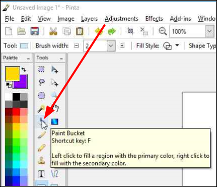

Coloring Areas¶
The Paint Bucket  tool can be used to fill an area with a single specific color or hue. You can fill a selected portion of the image, a simple object, or text.
tool can be used to fill an area with a single specific color or hue. You can fill a selected portion of the image, a simple object, or text.
-
Select the Paint bucket
from the Tools menu.
The Paint Bucket options will be displayed on the Tools Settings Bar.

-
From the Paint Bucket options:
- Flood Mode: Select Contiguous and the fill will continue to bleed outwards from the click point until neighboring pixels fail to satisfy the Tolerance* setting. Otherwise select Global and the fill will cover all the pixels in the layer which satisfy the Tolerance** setting.
- Tolerance: Select the desired level of color tolerance (0-100). A low setting means that colors must be closely matched to the clicked point pixel location for them to be filled. Whereas a higher setting means that a high variance of pixels will be included in the fill operation.
-
Position the Paint Bucket cursor over the area to be filled and click to fill the region with the primary color. Right-click to fill the area with the secondary color.
The following example, with the primary color set to yellow, shows how the setting of the Tolerance level can affect what region is filled with the color.